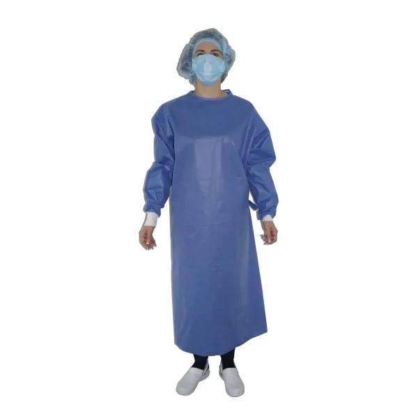
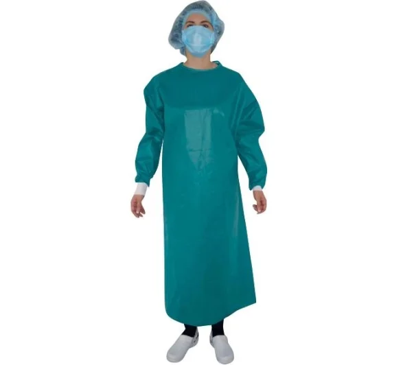

Стерильні хірургічні халати SteriBata оптом для лікарень, клінік та операційних
Постачаємо халати оптом для державних та приватних медичних закладів
✔ Лікарні
✔ Хірургічні відділення
✔ Операційні блоки
✔ Медичні центри
✔ Laboratorії
Документи для лікарень
✔ Сертифікати
✔ Повний пакет документації
Фото та ціни медичних одноразових халатів STERIBATA

Стерильний медичний одноразовий халат СИНЬОГО КОЛЬОРУ CMMC
Стандартний. Підсилений.
Оттові ціни за запитом

Стерильний медичний одноразовий халат ЗЕЛЕНОГО КОЛЬОРУ CMMC
Стандартний. Підсилений.
Оттові ціни за запитом
Стерильний медичний одноразовий халат СПАНЛЕЙС
Стандартний. Підсилений.
Оттові ціни за запитом
Нестерильний медичний одноразовий халат ЗЕЛЕНОГО КОЛЬОРУ CMMC
Нестерильний
Оттові ціни за запитом
Чому обирають халати STERIBATA
Стерильні та нестерильні варіанти
Підходять для оглядів, процедур та операцій
Легкі та зручні для тривалого використання
Відповідають медичним вимогам
Одноразове використання — мінімум ризиків
Матеріал: СММС 35г.м2, Спанлейс 68г.м2
Варіанти: Стандартні та Посилені
Для кого підходят стерилні халати SteriBata
Підійдуть для лікарень, приватних клінік, операційних блоків, лабораторій та медичних центрів.
Стерильні медичні халати преміум класу для операційних, клінік та медичних центрів. Високий рівень захисту, сертифікована якість, постачання оптом по Україні.
Стерильні халати SteriBata для операцій відповідають вимогам сучасної медицини. Використовуються в хірургії, реанімації та стерильних зонах.
Вибагливі користувачи будуть задоволені якістю і функціональністю халатів SteriBata.
Види халатів
Стерильні халати
Для операцій та інвазивних медичних процедур.
Нестерильні халати
Для оглядів, догляду за пацієнтами та щоденної роботи.
Розміри та матеріал, тип
Розміри: M, L, XL, XLL
Матеріал: SMMS / СПАНЛЕЙС
Колір: зелений, синій
Фіксація: липучки, манжети
Варіанти: Стандартні та Посилені
Кількість в груповій упаковці (ящику) залежить від розміру халата